실증 전 24시간 에이징 시험 결과 보고
대구도시철도공사 중앙로역 62채널 · AX NPU 2단계 이상상황 검출 체계 · 2026. 10. 13.
요 약
- 최종 알람 13건 발생(쓰러짐 8, 침입 5). 전체 정탐 6건, 오탐 7건.
- 쓰러짐 8건 중 정탐 2건, 오탐 6건.
- 침입 5건 중 정탐 4건, 오탐 1건. 오탐 1건은 사람 부재 상태에서 23시간 44분간 162회 반복 발화.
- 화재·연기 오탐 0건. 1차 검출기에 화재·연기가 활성화된 상태로 24시간 전 구간을 처리하였으나 오경보 전무.
- 1차 검출기에서 2차로 전달된 건수 102건, 2차 기각 94건(차단율 92.2%), 통과 8건. 통과 8건은 최종 쓰러짐 알람 8건과 일치함.
- 2차 검출기가 정탐을 기각한 사례 없음. 기각 94건 전수 확인 결과 실제 쓰러짐 미포함, 정탐은 전량 통과.
- 2차 검출기 응답 실패·폴백 0건, 응답지연 p95 552밀리초. 24시간 연속 무중단 가동 확인.
- 쓰러짐 관련 조치는 엘리베이터 구역 관심영역 설정 1건. 1차 검출기 오탐은 2차가 전량 차단하여 조치 불요.
1. 시험 개요
| 구분 | 내용 |
|---|
| 시험 방식 | RTSP 송출 기반 에이징 시험 — 저장된 24시간 녹화영상을 62채널 RTSP 스트림으로 실시간 송출하고, 운영 파이프라인이 실제 카메라와 동일하게 수신·처리 |
| 영상 원천 | 대구도시철도공사 중앙로역 실제 CCTV 녹화영상(연출·합성 영상 아님) |
| 영상 구성 | 62채널 × 24시간. 채널당 1시간 단위 .avi 24개, 00시~24시 전 구간 |
| 녹화 일자 | 2026. 5. 31. (폴더·파일명에 명시: 20260531-000000) |
| 영상 보관 위치 | NAS 10.128.30.51:/volume2/data |
| 시험 수행 구간 | 2026. 10. 12. 19:55:33 ~ 10. 13. 19:56:48 (24시간 1분) |
| 1차 검출기 | PE-Core-L14-336 MXQ(NPU). 쓰러짐·화재·연기 3종 활성, 1 fps, 임계 0.5 |
| 2차 검출기 | Qwen3-VL-2B 학습본 MXQ(NPU). VQA 이진 판정, 입력 256×192 단일 프레임 |
| 침입 검출 | 별도 모듈(사람검출 단독). 2차 검증 비대상이며, 판정 내역은 제7항에 기재 |
영상 경로
10.128.30.51:/volume2/data → DTRO/중앙로_영상백업/<채널명>/20260531-000000/
예시) 중앙로_1코너_회전^20260531-000000_20260531-010000_20260608-165527_0.avi
- 62개 채널 전부 1시간 단위 24개 파일로 00시부터 24시까지 연속 구성
- 전체 1,655개 파일, 1.4테라바이트
- 파일명의
20260531-000000_20260531-010000 이 해당 파일의 시작·종료 시각
2. 최종 알람 집계
| 카테고리 | 알람 | 정탐 | 오탐 | 비고 |
|---|
| 쓰러짐(falldown) | 8 | 2 | 6 | 2차 검증 통과분 |
| 화재(fire) | 0 | 0 | 0 | 1차 후보 자체 0건 |
| 연기(smoke) | 0 | 0 | 0 | 1차 후보 자체 0건 |
| 침입(intrusion) | 5 | 4 | 1 | 1차 단독 판정(2차 검증 비대상) |
| 계 | 13 | 6 | 7 | |
|---|
화재·연기 오탐 0건. 1차 검출기 운영 설정에 화재·연기가 활성 상태로 등록되어 62채널 24시간 전 구간을 처리하였으며, 그 결과 화재·연기로 잘못 울린 경보는 1건도 발생하지 않음.
쓰러짐 알람 8건의 카메라별 분포
| 카메라 | 설치 위치 | 알람 | 정탐 | 오탐 |
|---|
| 837 | dtro_03 1코너_회전 | 2 | 2 | 0 |
| 819 | dtro_42 상선_승강장_EV3 | 4 | 0 | 4 |
| 814 | dtro_48 시점_지상부_EV1 | 2 | 0 | 2 |
3. 쓰러짐 알람 8건 판정 내역
오탐 6건
① 카메라 819 — 4건
dtro_42 상선_승강장_EV3
10. 13. 08:44:34 / 08:44:47 / 08:44:59 / 08:45:49
알람번호 1172584·1172585·1172586·1172587
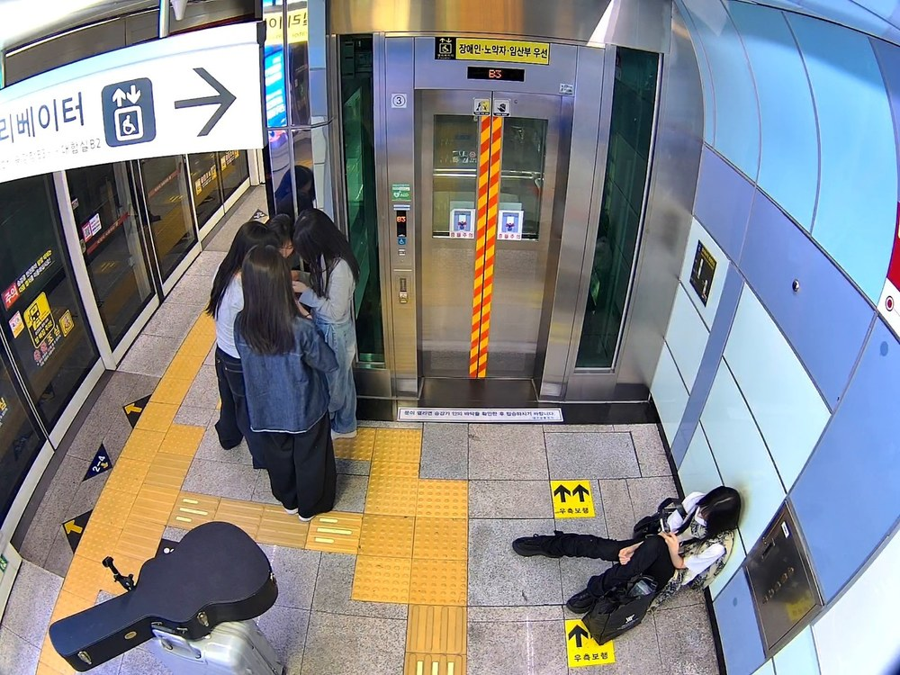
우측 하단, 벽에 등을 대고 바닥에 앉아 휴대전화를 보는 이용객.
다리를 뻗은 자세로 저해상도에서 누운 자세와 혼동됨.
운영 판정 문안이 “바닥에 앉은 자세는 쓰러짐 아님”으로 규정한 유형에 해당.
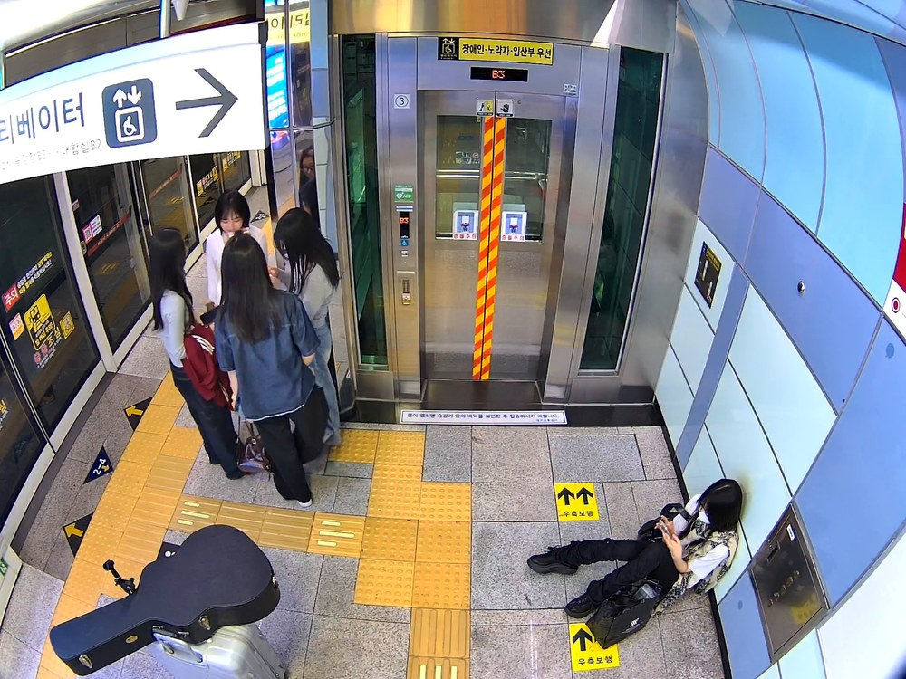
75초 경과 후 동일 인물. 동 구간 중 08:45:11 1건은 2차에서 기각되어,
동일 장면에 대한 판정 불안정이 관측됨.
2차 검출기 서술 출력(원문)
08:44:34 — “Two people stand and walk in front of a closed elevator.
A third person lies on the floor to the right of the elevator.”
08:44:59 — “Two people stand facing a wall in a tiled area.
A third person lies flat on the floor in front of a closed metal door.”
→ 바닥에 앉아 있는 이용객을 모델이 누워 있는 것으로 인식하고 있음.
② 카메라 814 — 2건
dtro_48 시점_지상부_EV1
10. 13. 03:01:25 / 19:13:27
알람번호 1172527·1172608
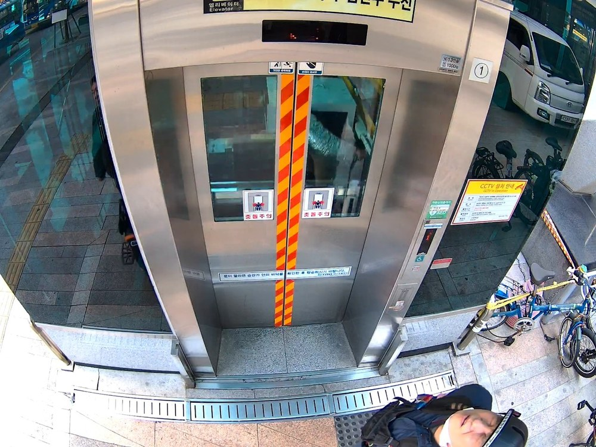
승강기 직상부에 설치된 어안 카메라로, 하부 통행자의 몸통이
화면 밖으로 잘리고 머리·어깨만 수평으로 압축되어 촬영됨.
실제로는 모자를 착용하고 보행 중인 이용객.
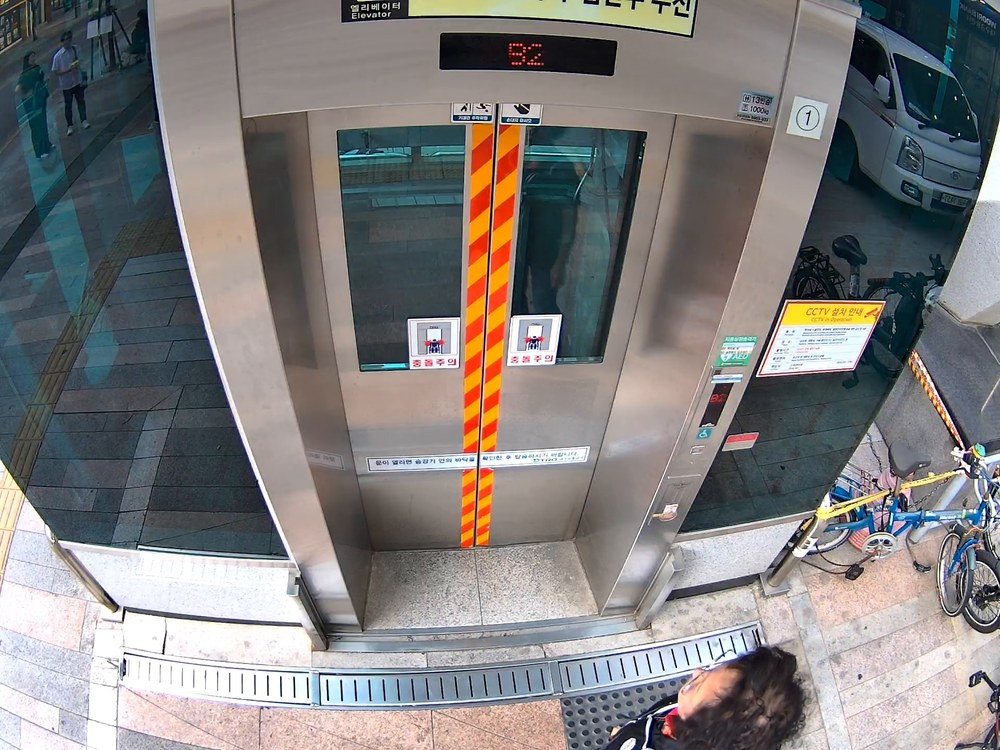
동일 카메라의 다른 1건. 구도·발생 원인 동일.
2차 검출기 서술 출력(원문)
03:01:25 — “One person is lying on the ground in front of the closed
elevator doors.”
19:13:27 — “One person lies on the ground
in the lower right foreground.”
→ 카메라 하부를 보행 중인 이용객을 모델이 누워 있는 것으로 인식하고 있음.
정탐 2건
① 알람번호 1172442
카메라 837 · dtro_03 1코너_회전
2026. 10. 12. 19:55:33
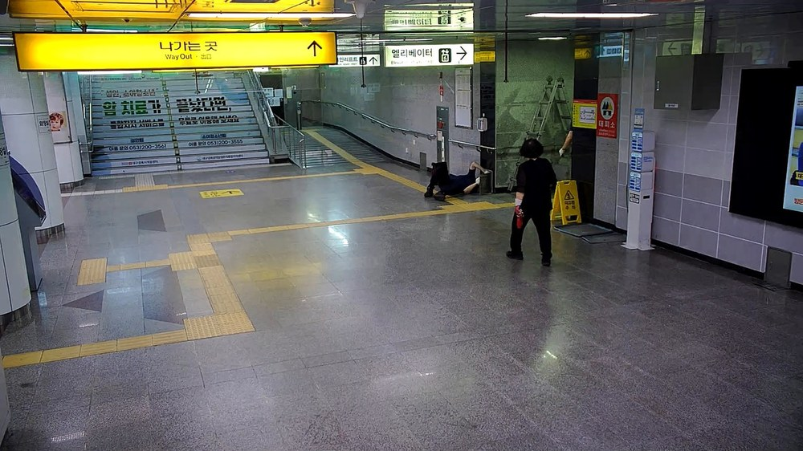
계단 하부에 이용객이 바닥에 누워 있고 인접 위치에 다른 인원이 서서 대응 중.
누운 자세 명확, 주변 인원 반응 확인됨.
② 알람번호 1172612
카메라 837 · dtro_03 1코너_회전
2026. 10. 13. 19:55:06
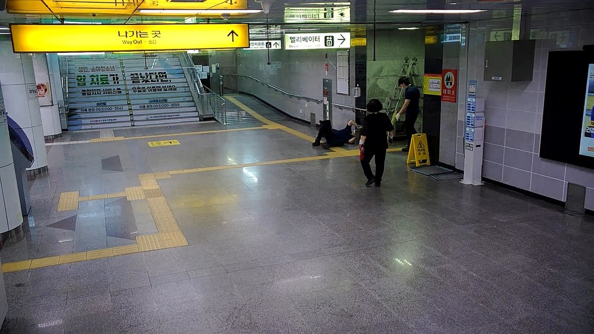
①과 동일 장면. 누운 인원, 인접 인원, 안전표지·사다리 등 배경 일치.
인물 위치만 소폭 상이.
2차 검출기 입력 화면
1차 썸네일 256×192 (4배 확대)
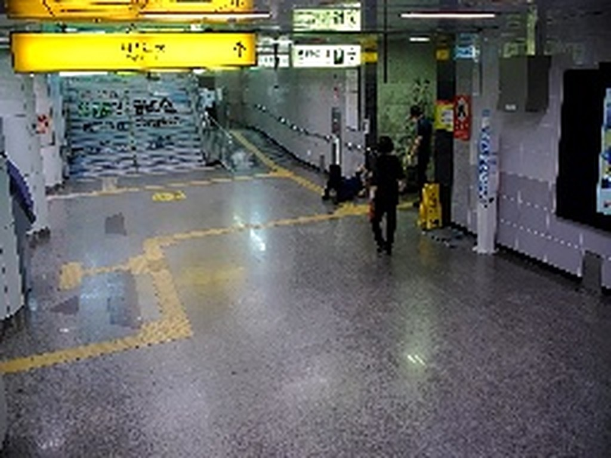
2차 검증이 실제로 수신하는 해상도.
해당 해상도에서도 누운 자세를 판별하여 정탐을 정상 통과시킴.
두 건의 발생 간격은 23시간 59분 33초이나 장면이 동일함.
24시간 영상의 시작·종료 경계에 해당하여 동일 구간이 2회 처리된 것으로 추정되며,
이 경우 실제 발생 건수는 1건.
3-1. 오탐 발생 원인 — 모델의 자세 인식 결과
오탐 6건은 모델이 해당 자세를 애초에 “쓰러짐”으로 인식한 결과임.
운영과 동일한 학습본 모델·판정 문안·입력 해상도(256×192)로 재현 시험을 수행하고,
동일 입력에 대한 모델의 장면 서술을 추출하여 확인함.
재현 시험 조건
- 모델: 운영 배포본과 동일(검증용 해시
vision 819dd9f1… / decoder 17215a7d… 일치)
- 실행 환경: 운영 검증서버와 동일 컨테이너(mblt-model-zoo 2.3.0+tta1 / qbruntime 1.4.0+repack1)
- 판정 문안: 운영 문안 원문 그대로 적용, 입력 256×192 고정
- 재현 결과: 1차 후보에 대한 운영 로그의 통과·기각 판정과 전부 일치
판정 로짓의 해석
모델 출력은 확률이 아닌 로짓이며, ‘yes’·‘no’ 두 로짓의 차이만이 판정에 관여함.
로짓은 softmax 이전의 원시 점수로 값의 범위에 제한이 없음. 본 모델은 두 토큰의 로짓만 비교하는 이진 판정 구조이므로,
판정 확률은 두 값의 차이를 로지스틱 함수에 통과시켜 산출함.
판정확률 P(yes) = 1 / (1 + e−(yes로짓 − no로짓)) = sigmoid(여유도)
- 로짓 절대값(관측 범위 36~45)은 단독으로 의미를 갖지 않음.
softmax 는 전체 가산 이동에 불변이므로 두 로짓에 같은 값을 더해도 확률은 변하지 않음
- 따라서 본 항은 절대값이 아닌 차이(이하 ‘여유도’)를 기재하며, 환산 확률을 병기함
- 여유도 0 = 확률 50%(판정 경계), +1.1 = 75%, +2.2 = 90%, +4.6 = 99%
모델 서술 출력 및 판정 로짓
| 카메라 | 발생시각 |
판정 | 여유도 |
판정확률 |
모델 서술 출력(발췌) |
|---|
| 819 | 08:44:34 | 통과 | +2.464 | 92.2% |
“A third person lies on the floor to the right of the elevator.” |
| 819 | 08:44:47 | 통과 | +1.760 | 85.3% |
“One person lies down on the floor to the right of the elevator.” |
| 819 | 08:44:59 | 통과 | +3.872 | 98.0% |
“A third person lies flat on the floor in front of a closed metal door.” |
| 819 | 08:45:11 | 기각 | +0.704 | 66.9% |
“One person lies flat on the floor to the right.” — 서술은 통과 건과 동일하나 판정 경계에 위치 |
| 819 | 08:45:49 | 통과 | +1.760 | 85.3% |
“A fifth person lies on the floor to the right of the elevator.” |
| 814 | 03:01:25 | 통과 | +1.760 | 85.3% |
“One person is lying on the ground in front of the closed elevator doors.” |
| 814 | 19:13:27 | 통과 | +0.352 | 58.7% |
“One person lies on the ground in the lower right foreground.” |
| 814 | 16:07:40 | 기각 | −5.280 | 0.5% |
“One person stands straight upright inside the cabin.” |
| 814 | 16:07:00 | 기각 | −6.688 | 0.1% |
“A foot of a person is partially visible at the bottom edge. No individuals are present in the cabin.” |
여유도 = ‘yes’ 로짓 − ‘no’ 로짓. 양수이면 통과, 음수이면 기각. 판정확률은 위 환산식에 의함.
로짓 출력의 양자화 상태
로짓이 0.352 단위로 양자화되어 있으며, ‘yes’ 로짓은 8비트 정수 상한에 포화된 상태임.
관측된 전 로짓이 0.352 의 정수배이고, ‘yes’ 로짓은 측정 전 건에서 44.704(= 127 × 0.352)로 동일함.
127 은 8비트 정수의 최대값으로, 신경망처리장치 양자화 출력의 상한에 해당함.
| 로짓 | ÷ 0.352 | 비고 |
|---|
| 44.704 | 127 | 8비트 정수 상한 — ‘yes’ 로짓 전 건 동일값 |
| 44.000 | 125 | ‘no’ 로짓(08:45:11, 기각) |
| 42.944 | 122 | ‘no’ 로짓 |
| 42.240 | 120 | ‘no’ 로짓 |
| 40.832 | 116 | ‘no’ 로짓 |
| 36.256 | 103 | ‘no’ 로짓 |
- 판정이 사실상 ‘no’ 로짓의 변동만으로 결정되는 구조임
- 여유도의 최소 분해능이 0.352 로, 판정 경계 부근에서 확률 약 8.7%포인트 간격에 해당함
(여유도 0 → 0.352 구간에서 확률 50.0% → 58.7%)
- 경계값 건의 판정이 뒤집히는 현상은 이 분해능 한계와 관련이 있는 것으로 판단됨
확인 사항
- 오탐으로 판정된 전 건에서 모델이 해당 인물을 “바닥에 누워 있다(lies on the floor / lying on the ground)”로 서술함.
즉 판정 문안의 적용 오류가 아니라 자세 인식 단계의 오인에 해당함
- 정상 기각 건에서는 “똑바로 서 있다(stands straight upright)”,
“발 일부만 화면에 보인다(a foot partially visible)”로 정확히 서술함.
모델이 해당 카메라 전체를 오인하는 것이 아니라, 화면 하단에 인물이 크게 걸리거나 바닥에 앉은 경우에 한해 수평 자세로 인식함
- 통과 건의 여유도는 +0.352 ~ +3.872(확률 58.7 ~ 98.0%)로, 기각 건(−5.280 ~ −6.688, 확률 0.5 ~ 0.1%) 대비 판정 경계에 근접함. 즉 통과 건은 확신도가 낮은 상태에서 통과한 것임
- 특히 카메라 819의 08:45:11 건은 서술 내용이 통과 건과 동일함에도 확률 66.9%로 경계에 위치하여, 동일 장면의 판정이 뒤집히는 원인으로 확인됨
- 운영 응답에 ‘yes’·‘no’ 로짓이 이미 포함되어 있어 판정확률 임계값(예: 90% 이상만 통과 = 여유도 +2.2) 적용이 기술적으로 가능하나, 현 단계의 조치 대상은 아님(제6항).
본 시험에서 로짓을 측정한 건은 오탐 6건에 한정되며(정탐 2건 미측정), 해당 6건 중 4건이 90% 미만임. 정탐 건의 판정확률을 확인하기 전에는 임계값을 확정할 수 없으며, 정탐이 함께 차단될 경우 미탐으로 전환되므로 임계값 도입 시 정탐 표본 확보가 선행되어야 함
4. 1차 → 2차 검출 흐름
| 구분 | 건수 | 내용 |
|---|
| 1차 검출기 통과(2차 전달) | 102 | 전량 쓰러짐. 화재·연기 후보 0건 |
| 2차 검출기 기각 | 94 | 차단율 92.2% |
| 2차 검출기 통과 | 8 | 전량 최종 알람 등록. 누수 0건 |
| 최종 알람(쓰러짐) | 8 | 2차 통과 8건과 일치 |
| 2차 응답 실패·폴백 | 0 | 24시간 연속 무중단 |
| 2차 응답지연 | p95 552ms | 최소 413 / 중앙 486 / 최대 644밀리초 |
집계 범위는 시험 구간 전체(10. 12. 19:55 ~ 10. 13. 20:00)이며 객체저장소 원본 전수를 기준으로 함. 별첨 1차추론기 결과.zip 은 수집이 시험 개시 37분 후(10. 12. 20:32)부터 이루어져 102건 중 100건만 수록되어 있음. 미수록 2건은 10. 12. 19:55:33(카메라 837, 통과)과 10. 12. 19:58:49(카메라 842, 기각)임.
2차 검출기의 정탐 기각 여부
정탐을 기각한 사례 없음. 2차 검출기가 전량 올바르게 선별함.
기각 94건을 전수 확인하였으며, 영상 유사도(dHash) 기준 14개 장면으로 분류 후 전 장면을 확대 검토한 결과
실제 쓰러짐은 1건도 포함되어 있지 않음. 기각 94건은 전부 오탐이 맞으며, 실제 쓰러짐은 전량 통과 처리됨.
| 장면 | 카메라 | 건수 | 2차 판정 | 실제 장면 | 검토 결과 |
|---|
| A | 826 | 74 | 기각 74 | 대합실 탁자에 앉아 엎드린 이용객 | 오탐 — 정상 기각 |
| B | 814 | 5 | 통과 2 / 기각 3 | 어안 카메라 하부 통행자 | 오탐 |
| C | 819 | 5 | 통과 4 / 기각 1 | 바닥에 앉아 휴대전화 사용 | 오탐 |
| D | 844 | 4 | 기각 4 | 원거리 벤치 착석 인원 | 오탐 — 정상 기각 |
| E | 860 | 2 | 기각 2 | 개집표구 원거리 통행자 | 오탐 — 정상 기각 |
| F | 827 | 2 | 기각 2 | 승강장 벤치 착석 2인 | 오탐 — 정상 기각 |
| G | 836 | 1 | 기각 | 화면 하단 경계 통행자 | 오탐 — 정상 기각 |
| H | 854 | 1 | 기각 | 계단 착석 2인 | 오탐 — 정상 기각 |
| I | 819 | 1 | 기각 | 화면 하단 경계 통행자 | 오탐 — 정상 기각 |
| J | 850 | 1 | 기각 | 화면 하단 경계 통행자 | 오탐 — 정상 기각 |
| K | 844 | 1 | 기각 | 원거리 인원 | 오탐 — 정상 기각 |
| L | 825 | 1 | 기각 | 벽면에 기대어 바닥에 착석 | 오탐 — 정상 기각※ |
| M | 837 | 2 | 통과 2 | 바닥에 누운 인원 및 주변 인원 | 정탐 — 정상 통과 |
| N | 842 | 2 | 기각 2 | 화면 하단 경계 통행자 | 오탐 — 정상 기각 |
| 계 | 102 | 통과 8 / 기각 94 | |
|---|
장면 M·N 은 24시간 영상이 순환 재생되는 구간 경계에서 동일 장면이 두 차례 처리된 것으로, 발생 간격이 각각 23시간 59분 33초·23시간 59분 46초임.
※ 장면 L(카메라 825, 10. 13. 15:16:59)은 벽면에 머리를 대고 다리를 뻗은 자세로 “기대어 착석”으로 판독함. 운영 판정 문안 규정에 따른 기각이 타당함. 다만 기각 건은 알람이 생성되지 않아 고해상도 자료가 없으므로 256×192 기준 판독임을 명기함.
5. 화재·연기 결과 상세
| 확인 항목 | 결과 |
|---|
| 1차 검출기 화재·연기 활성 여부 | 활성. 운영 설정 node-gpu-model-mappings.json 에 쓰러짐·화재·연기 3종 등록 |
| 검출기 정상 동작 여부 | 정상. 동일 일자 타 카메라군(429~439)에서 화재 7건·연기 1건 검출 확인 |
| 중앙로 62채널 화재·연기 1차 후보 | 0건 |
| 화재·연기 최종 알람 | 0건 |
| 화재·연기 오탐 | 0건 |
- 검출기 미활성 또는 장애에 기인한 결과가 아님
- 24시간 중 실제 화재·연기 상황이 발생하지 않았고, 이에 대한 오경보도 발생하지 않음
- 오탐 억제 측면에서 화재·연기 검출은 24시간 무오탐 기록
6. 결론 및 조치사항
결론
- 2단계 검출 체계가 설계 의도대로 동작함을 확인
- 1차 전달 102건 중 실제 쓰러짐은 1~2건이며, 2차가 94건을 차단하는 동시에 실제 쓰러짐은 전량 통과시킴
- 정탐 누락 사례 없음
- 화재·연기 오탐 없음
- 오탐 6건은 모델이 해당 자세를 애초에 쓰러짐으로 인식한 결과로, 재현 시험 및 모델 서술 출력으로 확인됨
- 오탐 6건이 전부 엘리베이터 설치 구역 2개 카메라에 집중되어 있어, 해당 구역 관심영역 설정 1건으로 조치가 완결됨. 1차 검출기 및 2차 판정 로직은 조치 불요함
- 24시간 연속 가동 중 2차 검출기 장애·폴백 없음
- 침입 검출은 정탐 4건·오탐 1건이며, 2차 검증을 거치지 않아 오탐이 그대로 발화됨. 정탐 4건도 열차 통과·근무자 출입 등 상시 발생 사유에 해당하므로 관심영역 설정 및 알람 종료 조건 점검 필요(제7항)
조치사항
쓰러짐 관련 조치는 엘리베이터 구역 관심영역 설정 1건에 한정함.
판단 기준은 2차 검출기를 통과한 최종 알람이며, 1차 검출기 단계의 오탐은 2차가 전량 차단하여
최종 알람으로 이어지지 않으므로 조치 대상에서 제외함.
| 순위 | 대상 | 조치 내용 |
|---|
| 1 | 카메라 814 · 819
(엘리베이터 설치 구역) |
관심영역(ROI)을 엘리베이터 승강구 구역으로 한정 설정.
최종 오탐 6건이 모두 해당 구역 밖(화면 하단 경계부, 벽면 바닥)에서 발생하였으므로,
구역 한정만으로 해소 가능함. 별도의 모델 개선이나 판정 문안 수정은 불요함 |
조치 불요 사항
| 구분 | 판단 사유 |
|---|
1차 검출기 오탐
(후보 102건) |
1차는 후보 선별 단계로서 과검출이 설계상 허용 범위이며, 2차 검출기가 94건을 전량 차단하여
최종 알람이 생성되지 않음. 1차 후보가 가장 많았던 카메라 826(74건)도 전량 기각되어 동일하게 조치 불요함 |
바닥 착석 자세
(카메라 819 유형) |
운용상 허용 가능한 오탐 수준으로 수용함. 해당 자세를 쓰러짐이 아닌 것으로 판별하도록
모델 또는 판정 문안을 개선할 실익이 낮으며, 과도한 억제는 실제 쓰러짐의 미탐 위험을 수반함 |
| 2차 검출기 판정 로직 |
현행 유지함. 정탐 누락 0건으로 현 설정이 목적을 달성하고 있음 |
제3-1항의 판정확률 임계값 적용 및 ‘yes’ 로짓의 8비트 정수 상한 포화 건은
현 단계의 조치 대상이 아니며, 정탐 표본이 확보된 이후 검토 가능한 참고 사항임.
판정 근거의 한계
- 1차 썸네일은 원본도 256×192이며, 해당 해상도에서는 착석 자세와 누운 자세의 구분이 곤란함
- 2차 검출기도 동일 해상도를 수신하므로, 카메라 819 오탐 4건은 판정 문안이 아닌 입력 해상도에 기인할 가능성이 있음. 다만 해당 유형은 허용 가능한 오탐으로 수용하므로 해상도 상향은 조치 대상이 아님
- 기각 94건은 알람이 생성되지 않아 고해상도 자료가 없으므로, 정탐 누락 0건 판정은 256×192 기준임
7. 침입 검출 결과 (별도 모듈)
침입 알람 5건 발생. 전수 확인 결과 정탐 4건, 오탐 1건.
침입은 사람검출 단독으로 판정하며 2차 검증을 거치지 않음.
오탐 1건은 사람 부재 상태에서 23시간 44분에 걸쳐 162회 반복 발화하여 조치가 필요함.
정탐 4건은 사람검출이 정확히 동작한 건이나, 열차 통과·근무자 출입 등 상시 발생 사유에 해당하여 운용 기준 수립이 필요함.
알람 내역
| 알람번호 | 카메라 |
설치 위치 | 최초 발화 |
발화
횟수 | 지속시간 |
판정 |
|---|
| 1172443 | 808 | dtro_15 B1F 종점환기실 |
10. 12. 20:12:04 | 162 | 23:44:44 |
오탐 |
| 1172467 | 803 | dtro_41 본선3중앙선로 11K548 |
10. 12. 23:45:43 | 1 | 0:00:00 |
정탐 |
| 1172469 | 811 | dtro_49 신호기계실 |
10. 12. 23:53:27 | 1 | 0:00:00 |
정탐 |
| 1172604 | 811 | dtro_49 신호기계실 |
10. 13. 16:43:42 | 1 | 0:00:00 |
정탐 |
| 1172607 | 803 | dtro_41 본선3중앙선로 11K548 |
10. 13. 18:12:10 | 1 | 0:00:00 |
정탐 |
| 계 (카메라 3대) | 166 | — |
정탐 4 / 오탐 1 |
|---|
- 알람 행 기준 5건, 발화 누적 기준 166회
- 발화 166회 중 162회(97.6%)가 단일 알람(1172443)에 집중
오탐 — 사람 부재 상태의 반복 발화(카메라 808)
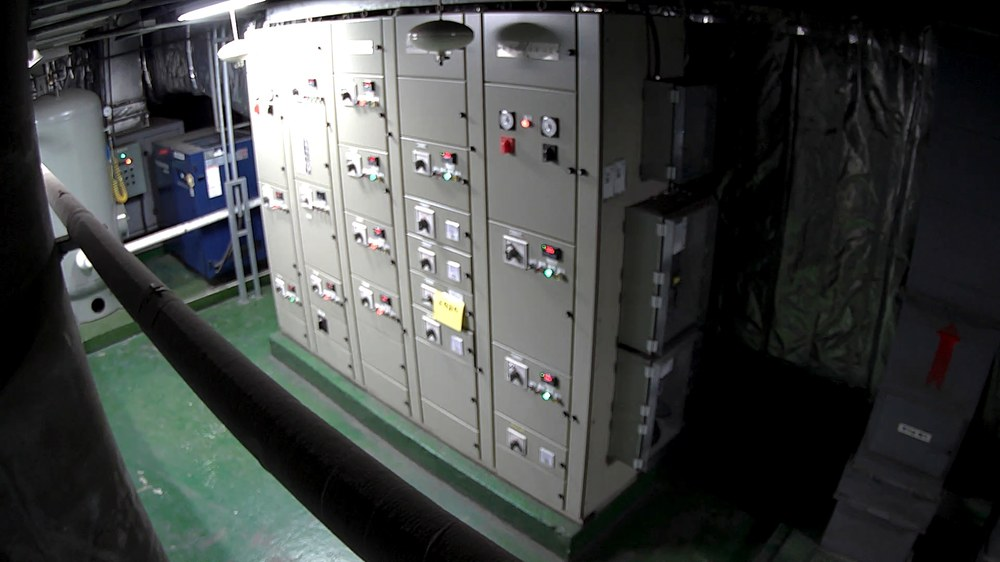
- 환기실 전기 배전반 구역. 화면 내 사람 없음
- 10. 12. 20:12:04 ~ 10. 13. 19:56:48, 23시간 44분간 162회 반복 발화
- 알람 종료 조건이 성립하지 않아 단일 알람이 시험 전 구간에 걸쳐 유지됨
- 배관·천장 설비·암막 커튼 등 고정 구조물을 사람으로 오인한 것으로 추정
정탐 ① 열차 창문 너머 승객 검출(카메라 803)
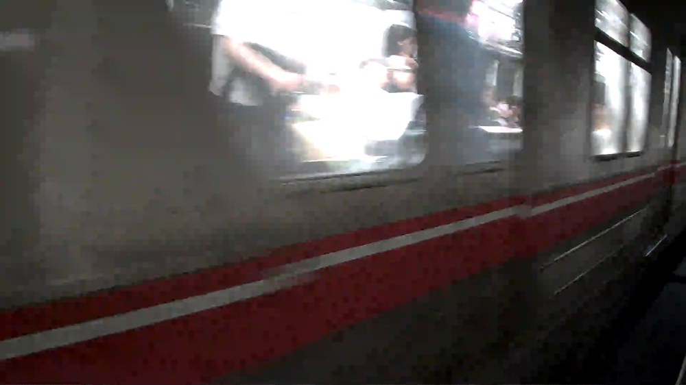
10. 12. 23:45:43 (알람 1172467)
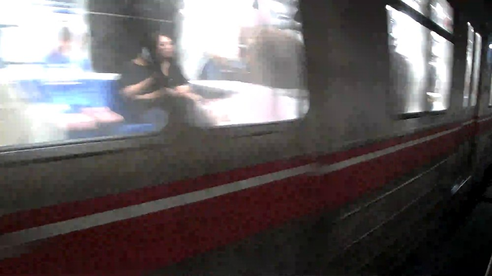
10. 13. 18:12:10 (알람 1172607)
- 사람검출 자체는 정확함. 본선 선로는 사람이 존재해서는 안 되는 구역이므로,
화면 내 사람을 검출하여 발화한 동작은 설계 의도에 부합함
- 검출 대상은 통과 중인 열차 차량 창문 너머의 탑승객이며, 궤도면에 진입한 인원은 아님
- 2건 모두 동일 사유이며, 열차 통과 시마다 재현될 수 있는 상시 발생 요인에 해당함
- 따라서 검출 성능의 문제가 아닌 관심영역 설정의 문제로, 궤도면 한정 설정으로 해소 가능함
정탐 ② 신호기계실 내부 보행자(카메라 811)
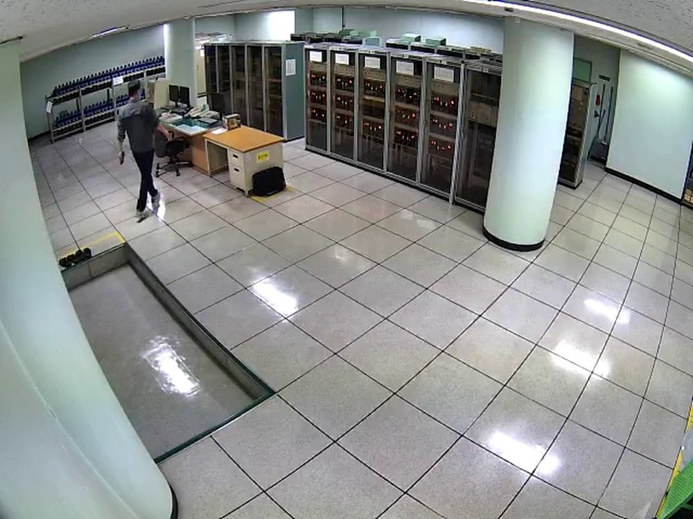
10. 12. 23:53:27 (알람 1172469)
10. 13. 16:43:42 (알람 1172604)
- 신호기계실 내부를 보행 중인 인원이 실제로 촬영됨. 사람검출 자체는 정확함
- 검출 대상이 궤도면·설비구역 내 실제 인원이므로 검출 목적에 부합하는 정탐에 해당함
- 다만 해당 인원이 근무자인지 외부인인지는 영상만으로 판별 불가
- 근무자 출입이 상시 발생하는 구역이면 운용 기준(출입 허용 시간대 등) 별도 설정 필요
조치사항
| 순위 | 대상 | 조치 내용 |
|---|
| 1 | 카메라 808
(종점환기실) |
관심영역(ROI) 재설정으로 배전반·배관·커튼 구역 제외. 아울러 알람 종료 조건 점검 필요 — 23시간 44분 미종료는 ROI 조정만으로 해소되지 않음 |
| 2 | 카메라 803
(본선3중앙선로) |
검출은 정상(정탐). 다만 열차 통과 시마다 발화하여 운용 부담이 발생하므로,
관심영역을 궤도면으로 한정하여 열차 차체·창문 영역 제외. 열차 통과 시간대 발화 억제 병행 검토 |
| 3 | 카메라 811
(신호기계실) |
검출 자체는 정상. 근무자 출입 허용 기준 수립 후 적용 |
침입 검출의 사람검출 성능 자체에는 결함이 확인되지 않음(정탐 4건).
발화 건수 저감은 전적으로 관심영역 설정으로 달성 가능한 사안임.
다만 카메라 808의 오탐 1건은 사람 부재 상태에서 23시간 44분간 알람이 유지되었으므로,
관심영역 조정만으로는 해소되지 않으며 알람 종료 조건 점검을 병행하여야 함.